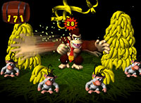
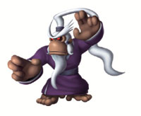
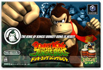

N.O.M７月号でインタビューした東京制作部が手がけたゲームキューブソフト、『ドンキーコング ジャングルビート』がついに完成！タルコンガを使った新しいアクションゲーム、各地のイベントなどで体験した人も多いのでは？東京制作部入魂の作品が完成にこぎつけるまでの激走エピソードと、みなさんに伝えたい熱い思いを聞いてきました！
|
|
 |
N.O.M ついに完成ということで、これまでを振り返ってみていかがでしょう。
小泉 怒濤の勢いで、ひたすら激走してまいりました…。
清水 やっと、という感じですね。本当に完成して良かったですよ。
N.O.M 年末発売の予定ではなかったんですよね？
小泉 全然そんなつもりはありませんでしたよ。「冬に発売」というつもりでいましたから。“冬”っていつまでか曖昧じゃないですか。下手したら「３月くらいまで冬〜」とか。だからいつになるかは…(笑)。
清水 それが年末に合わせて発売、ということになったのでもう大変で、それこそスタッフ全員で怒濤の激走だったわけです。もちろん品質を落とすわけにはいきませんしね。
N.O.M ６月に遊んだ感じでは、かなり完成度が高かったように思いました。
清水 システム的にはほぼできあがっていましたが、ステージや操作のバリエーションを増やしたり、細かい調整という部分ではまだまだでした。あれは本当に、基本の基本という部分だったので。
小泉 タルコンガを使うアクションゲームというのは大前提ですから、それは変わっていないです。Ｅ３での評価がかなり高かったので、その部分を崩さないように完成へ持っていく作業がかなり大変だったんですよ。スタッフを増やしつつ作業していたのですが、それがとても優秀な人たちで、そのおかげでこの短期間で完成できたんだと思います。
N.O.M 先日、東京でも『NINTENDO WORLD Touch! DS』が開催されましたが、見に行かれましたか？
清水 行きました。会場で楽しくプレイしている人を見て、ホッと安心しました(笑)。ショー関係ではまずアメリカのＥ３で賞を頂き、その後店頭で体験できる機会があって評判は上々。８月にライプチヒ（ドイツ）のショーからオファーが来て、展示したら高評価でしたし、秋にはトイフェスタがあってそこでも評判は良く、「これでいいんだ」と確認できました。このゲームはプレイする人がみんな笑顔になってくれるんですよ。
小泉 イベント会場では、３〜４歳にしか見えない小さな女の子が楽々プレイしていて、周りで見ていた中学生くらいの男の子たちが「すげえ！」「上手い！」と驚いてたりもしました。だから初心者でも、誰でも遊べるはずなんです。
清水 それから、ある子供さんがプレイし終わった後に、ドンキーコングと同じアクションをしていました。こう、胸をドンドン叩いて…。これはコントローラーでプレイしないからこそ、両手が空いているからこそ生まれたアクションだと思います。とても嬉しかったです。それと子供の横からお父さんやお母さんが手拍子で協力をする微笑ましい姿をたくさん見ることが出来ました。
小泉 どの会場でも、並んでいた人を見ると女性率がかなり高かったのが印象的で。ちょっとまえに流通業者向けの説明会があったんですが、そこでも女性のバイヤーさんがたくさん遊んで下さっていましたね。見た目にも「簡単で面白そうだ」と思われるみたいです。

|

|
|
|
|
|
|
N.O.M 完成に至るまで、さまざまなところでプレイしてもらえる機会があったゲームですね。
清水 海外でも非常に評価の高いゲームです。このソフトはいつでも電源を入れて遊べて、５分〜10分で１ステージが終われます。最近のゲームはプレイやクリアーに多くの時間を必要としたり、中断すると以前のストーリーを忘れた時に再開への興味を失うものが多かったりしますね。いろいろな媒体でゲームが出ていますが、どんどん形態が複雑になっていって、このまま行ったら“ゲーム”そのものが危ないんじゃないかと私は思っています。
N.O.M 大作であっても、大作すぎて忙しい人には敷居の高いものが多いですよね。
清水 うちのスタッフたちも同じことを言ってるんですよ。やっぱり忙しかったり疲れていたりで、時間をかけてやるのは面倒。ちょっと手を出してすぐやめられるようなもの、中断してもまた気軽に再開できるものを求めているんですよね。
小泉 楽しむためにゲームをやるのに、セーブやロード時間、ルーティンワークでストレスを溜めたら、それこそ意味ないですよ。だからこれは、忙しい日本人のニーズに合っているゲームだと思います。
清水 あと、これのマニュアルはできるだけシンプルに作ったんです。最初、マニュアルライターさんにゲームを見せたら「こんなにいろいろあるの!?」と目の色が変わりました。シンプルだけど、すごく奥深いんです。情報量を少なくして、とにかく“シンプルなゲーム”であることをアピールしたくシンプルなマニュアルにしました。
小泉 ドンキーコングとバナナ以外のキャラクターは、全てオリジナルですし。従来の『ドンキーコング』らしからぬ味が出ていて、完全新作だと思って頂いた方がいいですね。東京制作部のカラーを出すことが出来たのではないかなと思っています。
N.O.M ところで今回は、ストーリーらしきものが見あたりませんが？
小泉 細かいストーリーは、あえてなくしています。「王の中の王になれ」というキャッチしかない。とにかく先へ進んで闘って勝つ、「一番になる！」ということ。それを自身が体験していって、そのなかでストーリーを感じて欲しいなと思います。
清水 ユーザーにいろいろな部分を想像してもらうことで、敷居を低くしているんです。今回は本当にいろいろな所へ行きますから。ジャングルだけでなく、宇宙にも行くんですよ(笑)。どうやってそこへ行ったのかな？ どうして？ というようなことを想像して楽しんで欲しいですね。
N.O.M すでにプレイされた人の感想などはどうでしょう。
小泉 ゲームに詳しい人、得意な人でも面くらうみたいです。コントローラーがない、そこにまず驚く。これをプレイして、ゲームに対する考え方ガラリと変わったという人が多いようです。アクションゲームが苦手な人でも、絶対にできるはずという自信があります。
清水 これはですね、外から帰ってきて「今日の調子はどうかな？」と10分ほどタルコンガを叩いてその日のストレスを発散して、ほどよく汗をかいたらお風呂へ…というような遊び方をして欲しいですね(笑)。
|
|
|
|
|
N.O.M 話は変わりますが、東京制作部としてはまだまだ人材を募集されているんですよね。

清水 はい、任天堂の新しいキャラクターを生み出せる人、無から有を生み出し、それを具現化できる力を持った人を待っています。そういう人がもっと集まれば、ここはさらに強力な開発チームとなります。
小泉 “サプライズ”がキーワードです。人を驚かすことができる人がいいですね。
N.O.M これまで東京制作部でゲーム作りをしてきて、いかがでしょうか？
清水 “宮本茂”から学んだ、「ゲームとはどういうものか」を実践してこられたと思います。こういう機会を得られたというのは、本当に幸せなことです。ゼロから立ち上げるという、これまで経験のないことをしているので嬉しいですよね。壁や問題があっても、自分たちで解決していくということが、辛いながらもやはり楽しい。自分たちほど、ポジティブシンキングなヤツらはいないんじゃないかなと思いますよ。
小泉 もちろん、大変なことも多いですが(笑)。
清水 社長の岩田が東京制作部にもよく顔を出してくれるんです。スタッフのモチベーションも上がりますし、嬉しいことですよね。
N.O.M では最後にユーザーへのメッセージをお願いします。

小泉 いま思うと、クリスマスに間に合って良かったと思います。まず見て「？」が浮かんで、さわって「！」となる…というのをコンセプトにこれまで作ってきました。『敷居は低く、奥深く』という内容なので、とにかくさわって欲しいのがいちばんです。今回はタルコンガとソフトの同梱パックが発売されますが、かなりカッコイイのでぜひ同梱版を買って欲しいですね。
清水 ゲームキューブはまだまだ“遊び”を作れる媒体です。その可能性のなかのひとつとして、タルコンガを使ったアクションが生まれました。「大人もだまされたと思って、買って遊んでみて」と言いたいです。そして遊んでくれた人は、自分が感じたことをみんなに伝えて広めて欲しい。店頭デモが始まっているので、遊んだらサンタさんに「あれが欲しい！」と大声でお願いしてみて下さいね！
N.O.M 今日はどうもありがとうございました！ |
|
|
|